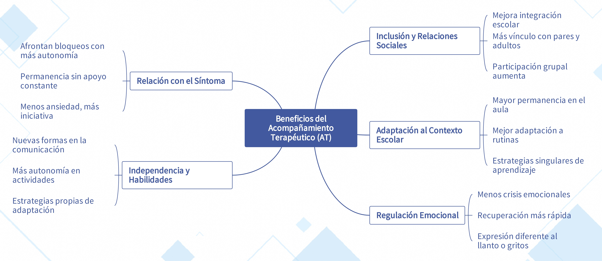

El acompañamiento Terapéutico en el contexto educativo
Beneficios
🌟 Descubre las ventajas del acompañamiento
En esta página exploraremos los beneficios del acompañamiento terapéutico.
A través de varias secciones, aprenderás cómo este rol impacta positivamente a los estudiantes, sus familias y el entorno escolar en general.
¿Y qué aportes pueden hacer?
🤝 Facilitación de la Inclusión y Relaciones Sociales 😊 Se documentan avances en la integración de estudiantes con diagnósticos de discapacidad intelectual, autismo y psicosis dentro del aula. 👫 Se observa un mayor acercamiento a pares y adultos, promoviendo la interacción y disminuyendo el aislamiento social. 🎨 Se evidencia mayor participación en actividades grupales, reforzando la autonomía y la pertenencia al grupo escolar.
🏫 Sostenimiento y Adaptación al Contexto Escolar 🪑 El AT favorece la permanencia del estudiante en el aula, especialmente en casos donde anteriormente el niño o niña permanecía solo unos minutos. 🔁 Se reporta una mejora en la capacidad de adaptación a las rutinas escolares y en la respuesta a las demandas académicas. 🧩 Apoya la construcción de estrategias de aprendizaje flexibles, que se ajustan en el momento según las necesidades del estudiante.
😌 Mejoras en la Regulación Emocional 🔽 Se ha observado una disminución en la frecuencia e intensidad de crisis emocionales. ⚡ Mayor rapidez en la recuperación emocional luego de situaciones de frustración o estrés. 🗣️ Desarrollo de estrategias para expresar necesidades sin recurrir a llanto o gritos.
🧠 Transformaciones en la Relación con el Síntoma 🔄 Se identifican cambios en la manera en que los estudiantes enfrentan situaciones que antes generaban bloqueo. 🚶♂️ Avances en la autonomía dentro del aula, logrando permanecer por tiempos prolongados sin necesidad de apoyo constante. 📉 Menor manifestación de síntomas de ansiedad en situaciones escolares, con mayor iniciativa en la participación educativa.
🌱 Incremento en la Independencia y Desarrollo de Habilidades 🗨️ Progresos en la comunicación efectiva, con solicitudes verbales claras dentro del aula. 👐 Mayor capacidad para realizar actividades cotidianas sin requerir asistencia constante. 🧠 Desarrollo de estrategias propias de regulación y adaptación a diferentes espacios educativos.
Lectura facilitada

Audio
🎙️ ¿Qué pasa cuando un niño empieza a pedir lo que necesita sin llorar? ¿Qué cambia cuando ya no necesita salir del aula cada cinco minutos?
En este episodio hablamos del acompañamiento terapéutico como un sostén clínico dentro del mundo escolar.
Basado en un estudio en Bogotá, compartimos los beneficios reales del AT:
✅ Favorece la inclusión sin forzarla ✅ Disminuye las crisis emocionales ✅ Mejora la relación del niño con su síntoma ✅ Promueve la autonomía desde lo cotidiano
💭 Si acompañas, enseñas o cuidas, este episodio puede ayudarte a mirar con otros ojos.
🔊 Escuchalo. Tal vez encuentres respuestas donde antes solo había síntomas.
Apoyo visual
🎥 ¿Y si el problema no es el niño, sino que está solo ante lo que le pasa?
El Acompañamiento Terapéutico no es solo estar. Es sostener. Es abrir un camino para que el niño no tenga que gritar lo que no puede decir.
En este video te contamos los beneficios del AT desde la evidencia de un estudio realizado en Bogotá: 🌱 Más permanencia en el aula 🧩 Mejores vínculos con pares y docentes 🎯 Mayor regulación emocional 🗣️ Comunicación más clara y autónoma
✨ Si eres docente o familiar, esto te puede cambiar la mirada.
👉 Dale play y descubre por qué el AT transforma lo cotidiano.
🖍️ Para comenzar
Iniciarás viendo un mapa mental que reúne los beneficios y los explica de forma gráfica y sencilla.
Así que pasa a la sección "Para mirar de un vistazo" y allí lo encontrarás.